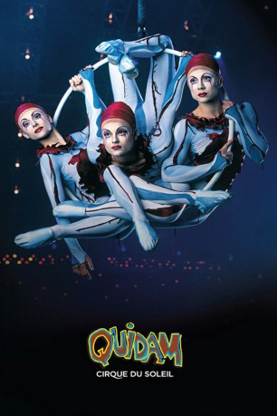

#6752 Cirque du Soleil - Quidam
 
 IMDB-Wertung: 8.5 / 10
IMDB-Wertung: 8.5 / 10  Metascore: 0
Metascore: 0 
By far the best soundtrack ever made for a Cirque Du Soleil show. A magnificent art piece.
Jahr: 1999
Dauer: 90 Minuten
FSK: 0
Land: USA Studio: Columbia TriStar Home VideoTonspuren:
Untertitel:
Auflösung: SD (576x320) Größe: 701 MB
Genre: Musik, Fantasy, Familie
Regisseur: David Mallet
Drehbuch: Cirque du Soleil Images
Soundtrack:
Darsteller:
- Audrey Brisson als Zoë
 Peter Austin Noto als MC , uncredited
Peter Austin Noto als MC , uncredited- John Gilkey als John
- Chris Lashua als German Wheel
- Wu Di als Diabolos
- Siqi Yuan als Diabolos
- Xin Zhao als Diabolos
- Xue Zhao als Diabolos
- Isabelle Chasse als Aerial Contortion in Silk
- Konstantine Besschetnyj als Skipping Ropes / Banquine Porter
- Tatiana Gousarova als Skipping Ropes / Banquine Flyer
- Yelena Kolesnikova als Skipping Ropes / Banquine Flyer
- Oleg Ouchakov als Skipping Ropes / Banquine Porter / Spanish Webs
- Dmitro Sidorenko als Skipping Ropes / Banquine Flyer / Spanish Webs
- Aleksandr Majorov als Skipping Ropes / Banquine Porter
- Konstantin Zakharenko als Skipping Ropes / Banquine Porter
- Igor Strizhanov als Skipping Ropes / Banquine Flyer
- Nicolle Liquorish als Skipping Ropes / Spanish Webs
- Néomi Tamilio als Skipping Ropes / Spanish Webs
- Serguei Rissouev als Skipping Ropes
- Sergei Okhai als Skipping Ropes / Banquine Porter / Spanish Webs
- Faon Shane als Spanish Webs / Skipping Ropes
- Natalia Pestova als Skipping Ropes / Mother / Spanish Webs
- Roman Polishchuk als Skipping Ropes / Banquine Porter / Spanish Webs
- Aleksandr Leontiev als Skipping Ropes / Banquine Porter / Spanish Webs
- Aleksandr Pestov als Skipping Ropes / Banquine Porter
- Denis Pirogov als Skipping Ropes / Banquine Flyer
- Svetlana Souvorova als Skipping Ropes
- Jonathan Morin als Skipping Ropes / Spanish Webs
- Shayne Courtwright als Skipping Ropes / Spanish Webs
- Jason Papp als Spanish Webs / Skipping Ropes
- René Bibaud als Skipping Ropes Solo
- Genevieve Bessette als Aerial Hoops
- Marie-Eve Bisson als Aerial Hoops
- Marie-Michelle Faber als Aerial Hoops
- Aloysia Gavre als Aerial Hoops
- Philippe Azoulay als Les Macloma
- Alain Catonné als Les Macloma
- Guy Pannequin als Les Macloma
- Olga Pikhienko als Handbalancing / Spanish Webs
- Carmita Lorador als Statue / Vis Versa
- Richard Jecsmen als Statue / Vis Versa
- Fatima Hedman als Cloud Swing
- Edward Skwirsky als Father
- Matthew Baker als Fritz
- Mark Ward als Quidam
- Richard D. Price als Singer
- Geneviève Dubé als Violin
- Yves Turgeon als Saxophone, Keyboards
- Josée Campeau als Cello , uncredited
Datei: X:\Dokumentationen\Cirque du Soleil\Cirque du Soleil - Quidam (1999, FSK0, 576x320).avi seit 11.08.2017
Festplatte: HD Serien(SU-Z)+Dokus+Musik
 Es gibt insgesamt 17 Filme in der Gruppe 'Dokumentationen\Cirque du Soleil'
Es gibt insgesamt 17 Filme in der Gruppe 'Dokumentationen\Cirque du Soleil'